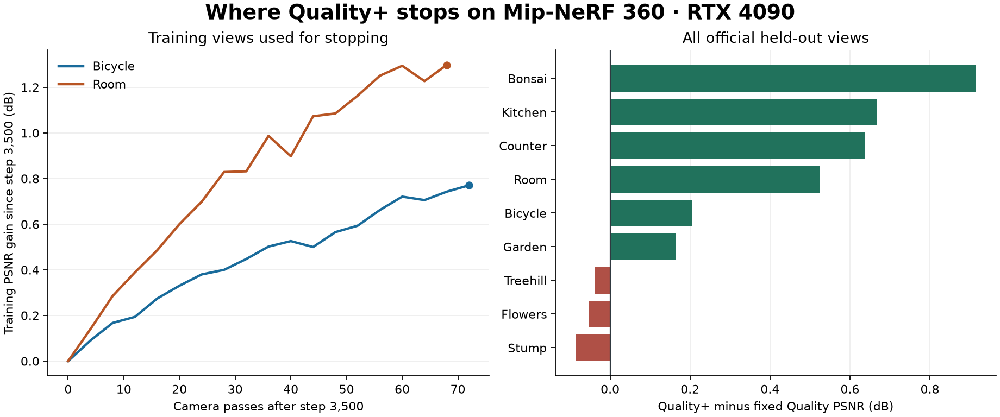
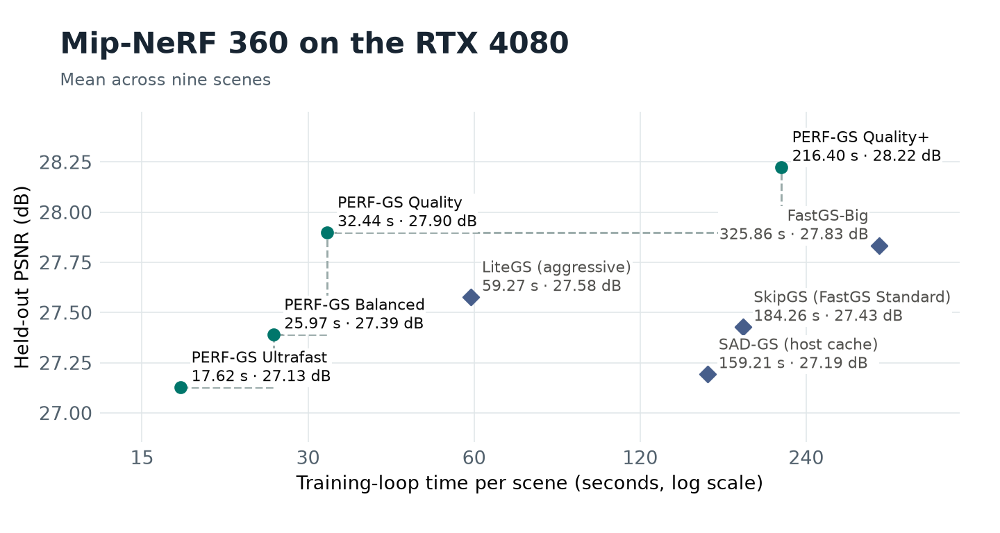

PERF-GS
3D Gaussian Splatting in 10 seconds
Efficient, extensible, cross-vendor, dependency-free & low VRAM differentiable training
Stump trains for 10.15 seconds in this recording, followed by a free-camera orbit. From opening the scene to the trained result took 13.90 seconds.
Nine-scene Mip-NeRF 360 averages
- Ultrafast training loop
- 10.51 s
- RTX 4090 · 3,000 steps
- Quality reconstruction
- 27.90 dB
- RTX 4090 · 22.68 s
- Quality+ reconstruction
- 28.227 dB
- RTX 4090 · 122.66 s
Overview
The goal was allowing hundreds of experiments in a day on a single consumer GPU. On our RTX 4090, Ultrafast preset runs the whole nine-scene Mip-NeRF 360 dataset in 94.6 seconds. Loading the photos, initializing the splats, scoring the held-out views and exporting the model take some minimal additional time.
How the trainer works
Trainer architecture
We started with SlangPy so we could write the training schedule in Python and work directly on the renderer in Slang. The goal was finding a balance between efficiency and modularity, and a Python training loop frontend, with a Slangpy-based Python backend and kernels written in Slang gave us exactly what we needed.
Python picks a training camera, sets the learning rates and decides when to grow the model. SlangPy compiles each shader entry point from source and caches the kernel for the session, its Python RHI allows toeasily orchestrate shader dispatches. There's no separate native extension to build.
A primitive supplies its projection, its coverage at a pixel, and its color. The compositor takes care of blending it over what's behind it. With Slang.D we can mark the projection and coverage functions as differentiable. Change the math in one of those functions and Slang generates its derivatives from the same source. For performance reasons, we still need to write the outer shell's backward passes ourselves. There's a small disk primitive in the tests that uses the same forward blend loop with its own coverage function. Primitive interfaces · Disk primitive test
Vulkan is the cross-platform target. D3D12 on Windows uses the same shader sources. Training has no CUDA or PyTorch dependency. One detail that mattered across vendors was wave size. We've run Vulkan training on Windows with the Nvidia RTX 4080, Nvidia RTX 4090 and AMD Radeon RX 7900 XT. Linux and macOS are unverified, yet.
Initialization
COLMAP gives us camera poses and a sparse cloud of colored points. Each point becomes a round splat. Its color initializes the constant spherical harmonic coefficient, its opacity starts at 0.1, and its initial scale comes from the root-mean-square distance to its three nearest neighbors. That lets a dense patch of points start with smaller splats than a sparse one.
We also seed geometry between those points. We take up to 28 anchor photos from the training split, rectify stereo pairs and match them in both directions. We then triangulate matches that agree left-to-right and right-to-left, then check where the 3D point lands in a third training photo. We keep it if the color agrees and this adds up to 256,000 splats in places the sparse reconstruction may barely have sampled, which helps speeding up initial convergence.
Taking inspiration from PPISP, for a single-camera reconstruction we fit one radial falloff strength during setup and apply it when rendering. Otherwise the trainer uses a flat response. Stereo initialization · Lens fit
Forward passes
One ordinary step records the forward render, image loss, backward passes and Adam update in one GPU submission. After growth, we reorder splats along a Morton curve so nearby splats sit together in memory. At the start of a view the GPU can then cull an off-screen cluster of 128 splats with one bounding-box test. The renderer projects each surviving Gaussian to an ellipse, counts the 8 × 8 pixel tiles it overlaps, and evaluates its view-dependent color if it touches the image. We use Mip-Splatting here. The training cameras set a 3D smoothing scale for each splat, and a 2D filter widens small projected footprints while compensating their opacity.
A large splat can touch many tiles. Sorting a depth key for every copy would repeat a lot of work. We sort splats by depth once per view, emit the splat–tile pairs in that order, then do a stable GPU radix sort on just the tile ID. Each tile gets a front-to-back list. The blend skips alpha below 1/255 and stops a pixel once its remaining transmittance falls below 0.0001. The loss compares the render with the training photo using pixel error and SSIM. The SSIM shader filters each 11 × 11 neighborhood first along rows, then along columns. Rasterizer · SSIM shader
Backward passes
We take inspiration from recent work on per-splat backward pass parallelization (instead of per-pixel parallelization), see TamingGS, but improve much further on its design, implementation and optimization. Every 32 splats in a tile, the forward pass saves the accumulated RGB and remaining transmittance for each active pixel, which we later use to reconstruct color and transmittance during the gradient backward pass.
Indirect dispatches are used to schedule work-lists for each 32-splat-group/wave, meaning in the gradient bwd pass, each lane takes one splat, uses wave-instrinsics to reconstruct its place/factor in the localized blending, and adds up contributions from the tile's pixels in registers, which cuts the number of threads trying to add to the same gradient in memory (reducing atomic contention).
Once those contributions have been summed across tiles, a separate pass differentiates the projection once per contributing splat. Another pass handles spherical harmonic color and its dependence on view direction. Adam updates the parameters in 32-bit float (and we use int64 atomics for better cross-platform compatibility). Its two running moments are stored in bfloat16 with stochastic rounding, which halves the storage for those moments and lets small updates accumulate. Blend backward · Projection backward · Adam precision
Densification
We use a modified version of structure-aware densification from SAD-GS. During growth, every tenth step samples a structure tensor built from RGB gradients in the training photo, this gives us an estimate of the local image frequency. The shader projects the splat's three axes into that view and scores each projected length against that frequency. Think of a long splat on a fence: seen end-on it might cover a couple of pixels, but from the side it might stretch across several slats. We accumulate those observations across cameras before deciding which axes to split.
Every 500 steps during growth, a splat can split if over 64% of its eligible observations vote for more detail and its screen-position loss gradient is large enough. Depending on which axes need subdivision, one parent can become two, four or eight children. On the intervening 100-step growth updates, we use an AbsGS-style update driven by accumulated screen-position gradients. Small splats with a large gradient can be cloned and larger ones can split. Growth updates can also prune splats with low opacity or little accumulated blend weight. With Quality's 4M cap, proposed splits can outnumber the free slots. We rank expansions by the parent's average screen-position gradient divided by the proposed family size and give space to whole families, strongest axis first. Structure scoring · Split allocation
Presets
All four presets use the renderer and growth rules above, but we change how many pixels and splats get work, where the photos live, and how long we keep refining. The timings and held-out PSNR below are means over the nine Mip-NeRF 360 scenes on the RTX 4090, with equal weight per scene.
Ultrafast
A spatiotemporal blue-noise mask picks a quarter of the pixels for the backward pass, scales their gradients by four, and advances on the next visit to that camera, while SSIM still sees the full neighborhood. Degree-2 spherical harmonics and 3,000 steps gave 10.51 s at 27.13 dB.
To isolate sparse pixel sampling advantages, run Ultrafast twice on the same scene and seed. Set --stbn-pixel-fraction 1 on the second run. You get full pixel supervision with the same growth cap, color model and GPU image cache.
Balanced
Balanced runs for the same 3,000 steps with the same degree-2 color model, and uses every pixel for supervision. It's the default. It allows up to 2.6M splats and grows through step 1,900. We stream the current photo from RAM into a mapped GPU texture and compute its structure map when needed. On Bicycle alone, caching all 169 training photos takes 656 MiB of packed pixels and their structure maps add another 1,311 MiB before texture padding. Reusing those textures is how Balanced fits more splats in less VRAM than Ultrafast. It averaged 15.91 s at 27.40 dB, with 2.81 GiB of GPU memory at loop end versus Ultrafast's 5.29 GiB.
Quality
Here we still stream the photos and use every pixel. Moving from degree-2 to degree-3 spherical harmonics gives each color channel 16 coefficients instead of nine to fit changes with viewing angle. It can grow to 4M splats through step 1,900. For the next 200 steps, we sample one pixel per 4 × 4 block and estimate how much its RGB would change if a splat disappeared. The estimate accounts for the splats in front of it and the color that would show through from behind.
At step 2,100 the CPU ranks the removal costs collected on the GPU, and the GPU compacts the surviving splats. We aim to keep 75% of the live population and always keep splats we didn't observe during scoring. The final 1,400 steps refine the survivors. That gave 22.68 s at 27.90 dB and 2.10M final splats on average. We tried the same 75% trim on Bicycle and Kitchen with the two faster presets. SSIM and LPIPS got worse in all four runs, so we left it out of those presets.
Quality+
This runs Quality's 3,500 steps and continues with the model it just trained. The splat count stays fixed and we keep the Adam state, final learning rates and loss weights. To decide when to stop, we render up to eight fixed training views every four passes' worth of updates (at least 100 steps). A cumulative gain of 0.05 dB in mean PSNR resets the counter. Three checks without that gain end the run. The held-out views are used for reporting. On the 4090 that bought another 0.33 dB on average, reaching 28.227 dB in 122.66 s including the convergence checks. The four indoor scenes gained 0.69 dB on average and the five outdoor scenes gained 0.04 dB. Preset settings and stopping rule · Benchmark results
Reconstructions
For each scene, the same held-out photo ranked first in full-image PSNR for all three presets. The box marks the same detail in the photograph and both renders.


DSCF0912.JPG · Ultrafast 34.20 dB · Quality 34.99 dB
Drag a divider or use the arrow keys. Push the dividers together to compare the outer images.
RTX 4080, seed 42. Ultrafast and Balanced ran for 3,000 steps and Quality for 3,500. Scenes and photographs by Barron et al., CVPR 2022. Mip-NeRF 360 dataset ↗
Reconstructions - animated
Benchmark results
Each of the nine Mip-NeRF 360 scenes contributes equally. Graphdeco evaluation covers 246 held-out views, at quarter resolution outdoors and half resolution indoors.
| GPU / preset | Steps | Train loop | PSNR ↑ | SSIM ↑ | VGG LPIPS ↓ | End VRAM |
|---|---|---|---|---|---|---|
| RTX 4090 24 GB | ||||||
| Ultrafast | 3,000 | 10.51 s | 27.13 dB | 0.7935 | 0.2564 | 5.29 GiB |
| Balanced | 3,000 | 15.91 s | 27.40 dB | 0.8141 | 0.2228 | 2.81 GiB |
| Quality | 3,500 | 22.68 s | 27.90 dB | 0.8285 | 0.1996 | 4.81 GiB |
| Quality+ | 17,044 avg. | 122.66 s | 28.227 dB | 0.8317 | 0.1909 | 4.81 GiB |
| RTX 4080 16 GB | ||||||
| Ultrafast | 3,000 | 17.62 s | 27.13 dB | 0.7936 | 0.2567 | 5.29 GiB |
| Balanced | 3,000 | 25.97 s | 27.39 dB | 0.8143 | 0.2229 | 2.80 GiB |
| Quality | 3,500 | 32.44 s | 27.90 dB | 0.8286 | 0.1997 | 4.80 GiB |
| Quality+ | 17,536 avg. | 216.40 s | 28.225 dB | 0.8316 | 0.1907 | 4.80 GiB |
| Radeon RX 7900 XT 20 GB | ||||||
| Ultrafast | 3,000 | 16.44 s | 27.125 dB | 0.7936 | 0.2569 | 5.41 GiB |
| Balanced | 3,000 | 27.02 s | 27.391 dB | 0.8143 | 0.2229 | 2.85 GiB |
| Quality | 3,500 | 39.47 s | 27.898 dB | 0.8286 | 0.1997 | 4.85 GiB |
Headless Vulkan, seed 42. Training-loop timing excludes COLMAP reconstruction, loading, initialization, held-out evaluation and export. Quality+ includes its training-view convergence checks. VRAM is sampled at loop end.
4090 fixed-budget CSV ↓4090 Quality+ CSV ↓4080 fixed-budget CSV ↓4080 Quality+ CSV ↓7900 XT fixed-budget CSV ↓
Quality+ convergence on the RTX 4090

Quality+ stopped between 8,652 and 21,996 steps. Compared with Quality, held-out PSNR rose on six scenes and by 0.326 dB on average. VGG LPIPS improved on all nine.
Compare trainers on the same RTX 4080

The dashed line connects measured configurations that improve PSNR as more training time becomes available. Method settings and measurements ↗
Train your own scene
Perf-gs was designed to be extremely simple to setup and install.
git clone https://github.com/electronicarts/perf-gs.git
cd perf-gs
py -3.11 -m venv .venv
.\.venv\Scripts\python.exe -m pip install -e .python -m trainer.frontend.app --hubOnce the point cloud appears, choose a preset and click Start Training. Explore the result and save it with Export PLY....
Installation and quickstart ↗Ultrafast requires NVIDIA's separately licensed research masks. Balanced is the default.

Citation
@software{scolari2026perfgs,
author = {Scolari, Stefano},
title = {{PERF-GS}},
year = {2026},
publisher = {Electronic Arts},
url = {https://github.com/electronicarts/perf-gs}
}